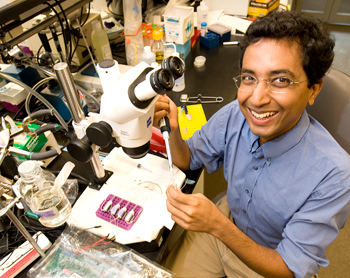

News Archives : 2011 : MCB Faculty Florian Engert and Sharad Ramanathan Receive 2011 NIH Director's Pioneer Awards
by Cathryn Delude, Florian Engert and Sharad Ramanathan
September 20, 2011

Sharad Ramanathan
Florian Engert
Two MCB faculty members, Florian Engert and Sharad Ramanathan, are recipients of the 2011 NIH Director’s Pioneer Award Program. This program supports individual scientists of exceptional creativity who propose innovative and possibly transforming approaches to major challenges in biomedical and behavioral research. Recipients receive a grant of up to $500,000 direct costs per year for five years to conduct a project that is substantially different from those already being pursued in the investigator’s laboratory or elsewhere. The Pioneer Award Program was established in 2004 as part of the NIH Roadmap for Medical Research, a high-risk research initiative of Research Teams of the Future intended to accelerate the translation of research into improved health.
“I am honored to receive the NIH Directors Pioneer Award,” said Sharad Ramanathan, Assistant Professor of Molecular and Cellular Biology and Assistant Professor of Applied Physics (SEAS). “We will use the opportunities this award provides to understand how electrical activity and molecular circuits together influence the developmental decisions of progenitor cells that differentiate into the different kinds of neurons in the brain. In the process, we will build novel optical and imaging systems, microfluidics and image processing tools that we hope will be immediately useful to the scientific community.”
Florian Engert, Professor of Molecular and Cellular Biology, will use his Pioneer Award grant to study the neural basis of navigation, learning and memory in a zebrafish model. “I propose to establish a fictive swimming assay that allows paralyzed larval zebrafish to navigate through and interact with a virtual environment entirely through the activity in their motor neurons,” Engert explained. He will then study the flow of neural information as individual fish are trained to do different learning tasks. He also plans to use genetically encoded optic tools to activate and silence targeted subsets of neurons to develop and test emerging theories.
“I am delighted that the NIH recognized, and now supports, the exceptional scientific creativity of two MCB faculty Florian Engert and Sharad Ramanathan,” says MCB Chair Catherine Dulac, Higgins Professor of Molecular and Cellular Biology and Howard Hughes Medical Investigator.
The 2011 Pioneer awardees were announced at the Seventh Annual NIH Director’s Pioneer Award Symposium on Tuesday, September 20-21, 2011 in Bethesda, Maryland.
[September 20th, 2011]